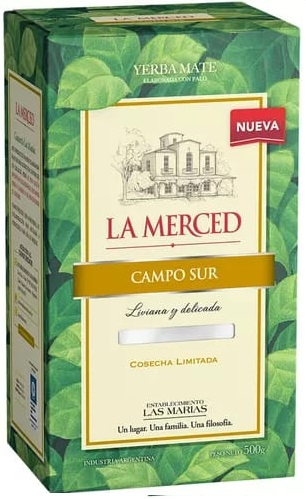
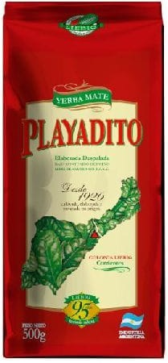
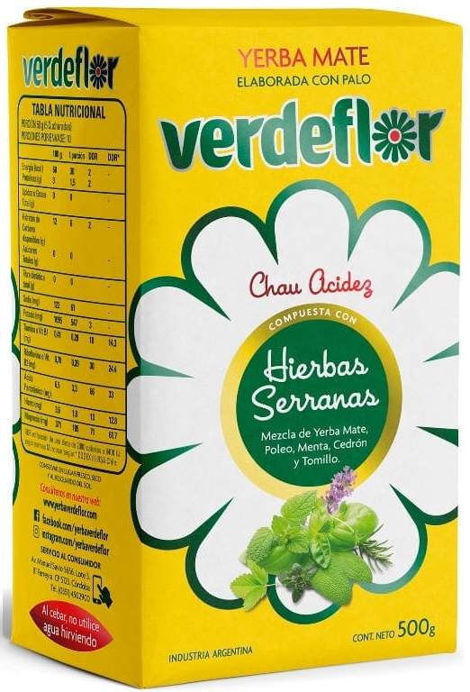
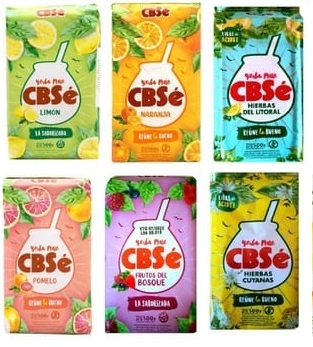
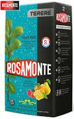
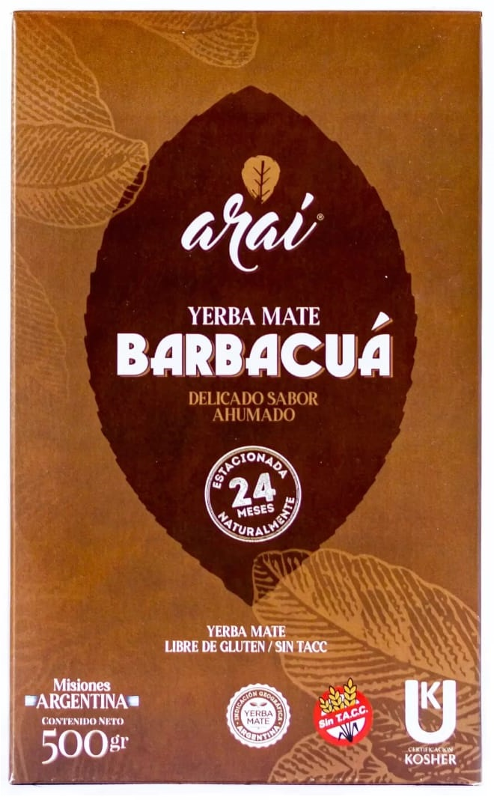
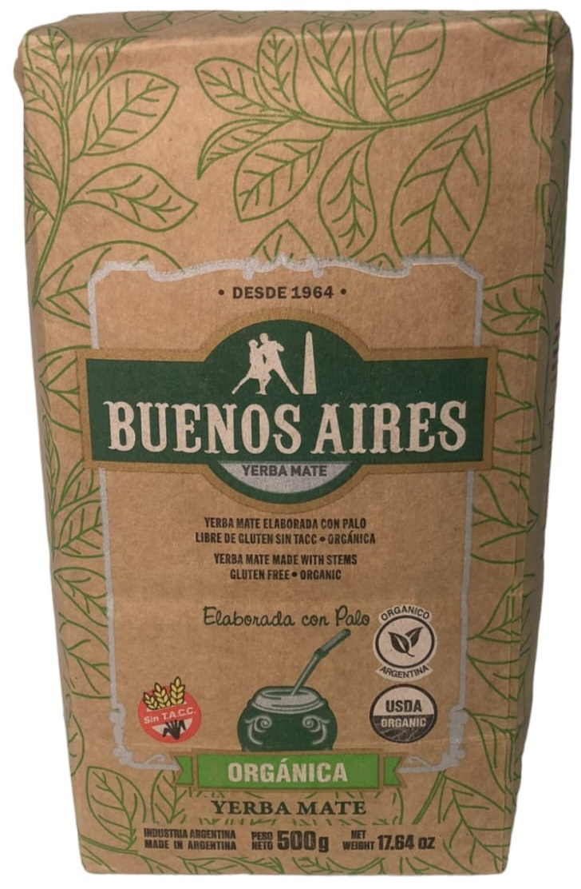

| Tipo de Yerba | Descripcion | Recomendacion |
|---|---|---|
| Yerba mate con palo | Si queremos disfrutar de un mate suave, la Yerba Mate tradicional es una buena opción. Posee un promedio de 70% hojas secas y trituradas y un 30% de palo. |  |
| Yerba mate sin palo | Para los que gustan de un mate más fuerte, duradero y de sabor intenso, la opción es utilizar la Yerba Mate sin palo. |  |
| Yerba mate compuesta | Contiene hierbas como el boldo, tilo, manzanilla, poleo (entre otras). A las propiedades antioxidantes y energizantes de la Yerba Mate, se suman las propiedades de las hierbas naturales. |  |
| Yerba mate saborizada | Para los que prefieren ir cambiando los sabores y no gustan de los mates amargos e intensos, pueden encontrar en las góndolas una amplia variedad de yerbas elaboradas con esencias naturales y sabores que van desde los cítricos (pomelo, limón, naranja). |  |
| Yerba mate para tereré | Para su elaboración, se utiliza yerba mate con una molienda más gruesa.El tereré see toma con agua fría o jugos naturales. Tiene menor contenido de polvo, esto evita que se obstruya la bombilla. |  |
| Yerba mate Barbacuá | Es la yerba mate sometida a un proceso de secanza utilizado por los nativos guaraníes. Barbacuá significa "tostado" en guaraní. Este proceso le da a la Yerba Mate un ligero sabor ahumado o tostado propio de las maderas utilizadas durante el secado de las hojas. |  |
| Yerba mate orgánica | Para su elaboración se tiene en cuenta el cuidado del medio ambiente. Desde la siembra hasta la cosecha, se evita la utilización de agroquímicos. |  |